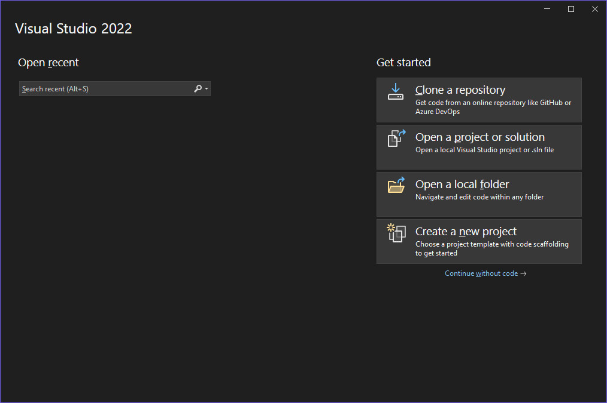
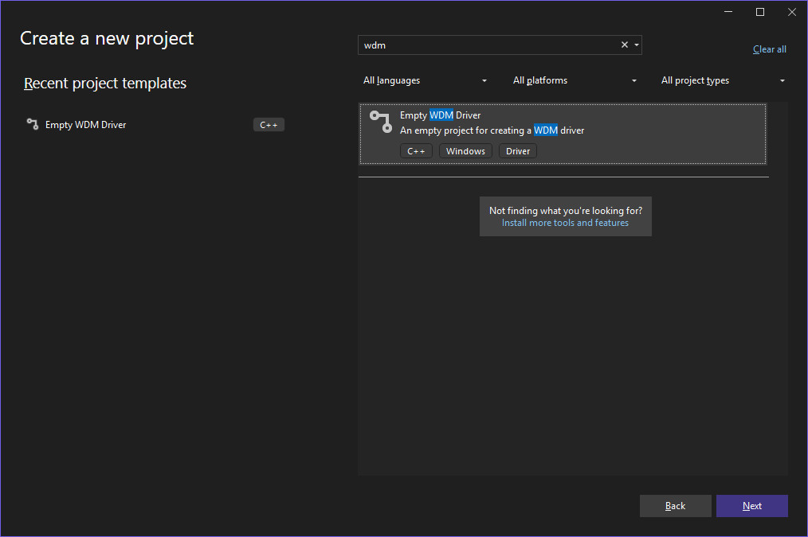
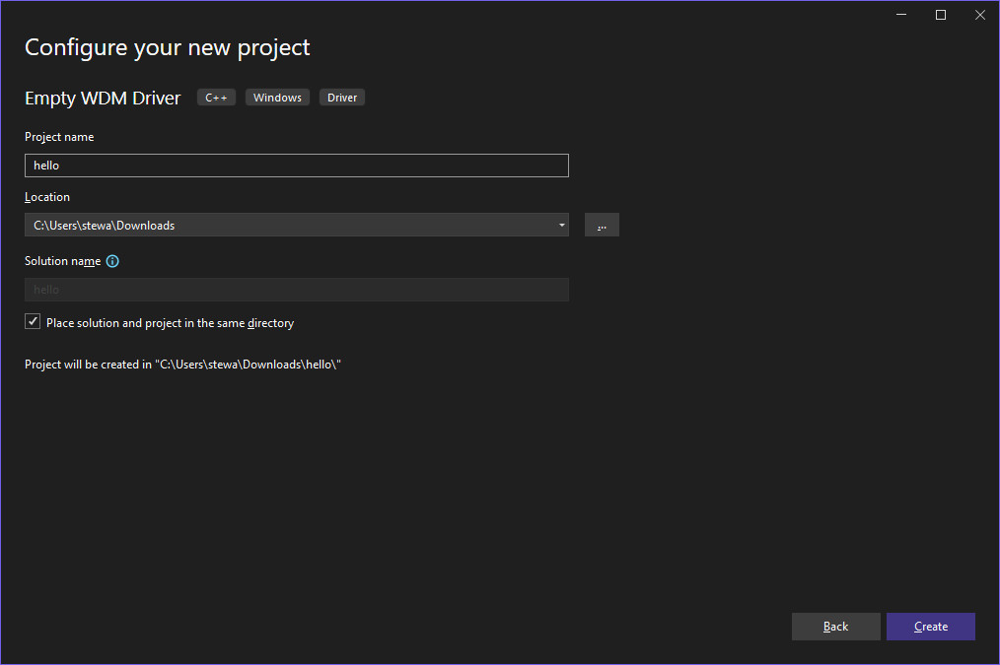
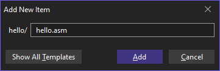
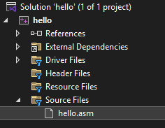
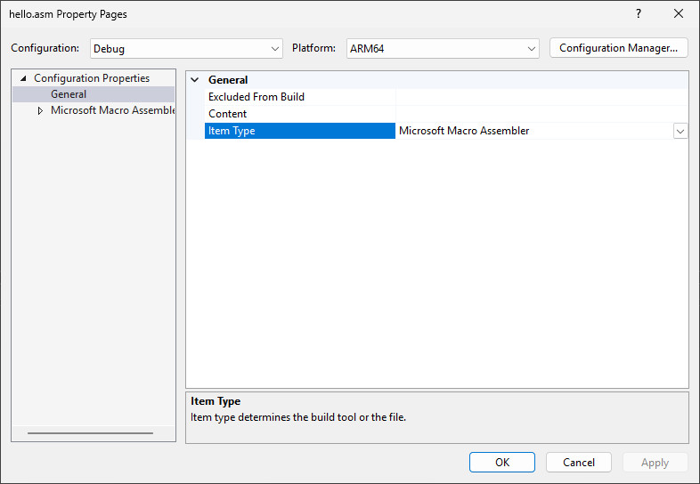
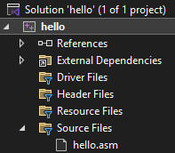
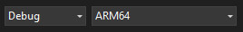
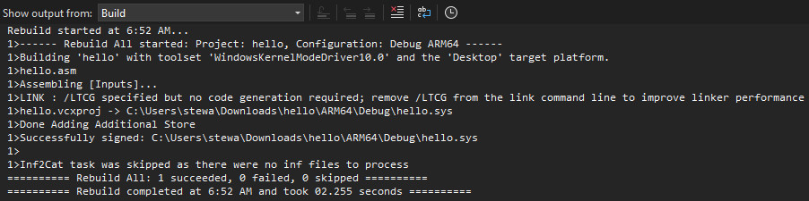
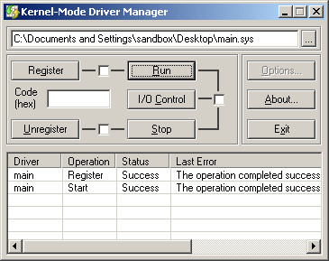

輸入完上列指令後，就可以看到輸出的Hello, world!字串

如果要更方便測試，建議使用Four-F撰寫的KmdManager
參考資訊：
https://wasm.in/
http://four-f.narod.ru/
https://github.com/steward-fu/ddk
main.asm
export DriverEntry
extern DbgPrint
area .data, data, arm64
Msg dcb "Hello, world!", 0
area .text, code, arm64, align = 3
Unload
ret
DriverEntry
stp fp, lr, [sp, #-0x20]!
mov fp, sp
str x0, [sp, #0x10]
str x1, [sp, #0x18]
adrp x0, Msg
bl DbgPrint
ldr x1, [sp, #0x10]
add x1, x1, #0x68
adrp x0, Unload
str x0, [x1]
mov x0, #0
ldp fp, lr, [sp], #0x20
ret
end
Create a new project










c:\> sc create MyDriver binpath= c:\windows\system32\drivers\hello.sys type= kernel start= demand error= normal displayname= MyDriver c:\> sc start MyDriver
P.S. 要記得在"="前面都需要一個空格
輸入完上列指令後，就可以看到輸出的Hello, world!字串
如果要更方便測試，建議使用Four-F撰寫的KmdManager
